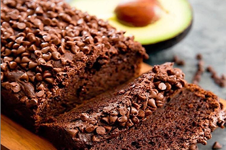
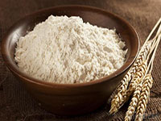
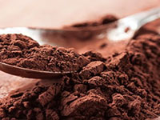
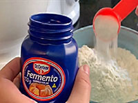
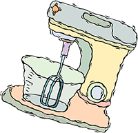
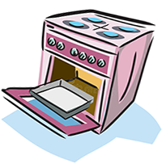

BOLO NEGA MALUCA

IGREDIENTES DA MASSA




MODO DE PREPARO DA MASSA
- Em um recipiente, coloque os ovos inteiros, o açucar, o chocolate em pó, o óleo, o trigo e a água fervendo.
- Misture tudo com uma colher mesmo e adicione por último o fermento em pó
- Despeje a massa em uma forma e leve ao forno médio (180 C), preaquecido, por 30 minutos.
- Desligue o forno e deixe o bolo esfriar

IGREDIENTES DA COBERTURA
MODO DE PREPARO DA COBERTURA
- Coloque todos os ingredientes em uma panela e leve ao fogo médio.
- Misture vigorosamente até que a cobertura desgrude da panela.
- Despeje por cima do bolo e bom apetite
